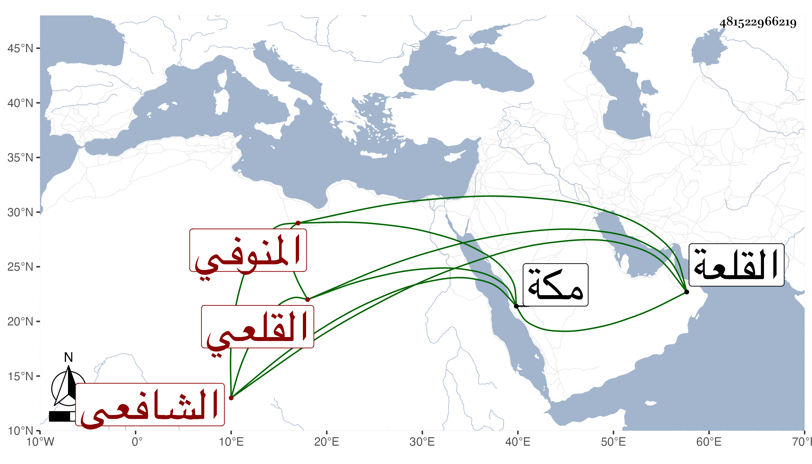

0902Sakhawi.DawLamic.ITO20230111-ara1.EIS1600.481522966219
Biography ID: 481522966219
403
أبو الفتح المنوفي هو أحمد بن علي بن علي بن عيسى القلعي الشافعي ولد في أوائل سنة إحدى وعشرين وثمانمائة وحفظ القرآن واشتغل يسيرا وأقرأ المماليك في الطبقة الصندلية وتدرب في اللسان التركي وكان ممن قرأ عند يشبك من مهدي ورفيقه تغرى بردى القادري ولذا كان أولهما بعد ترقيه يحسن إليه وأم بجامع القلعة ثم ترقى حتى ناب في القضاء بل سافر قاضي المحمل غير مرة وأهانه الأتابك ازبك مرة منها بمكة بالضرب وغيره ثم بعد سنين أمر السلطان بصرفه عن النيابة واستمر حتى أعاده زكريا بسفارة تغرى بردى المشار إليه ولم يكن بذاك المرضي مع كثرة تلاوته ولازال يتقهقر حتى مات في جمادى الثانية سنة تسع وثمانين وبلغني أن أباه كان أيضا قاضيا بالقلعة عفا الله عنه .
